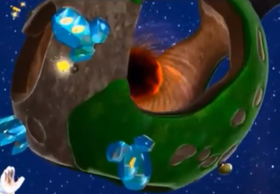
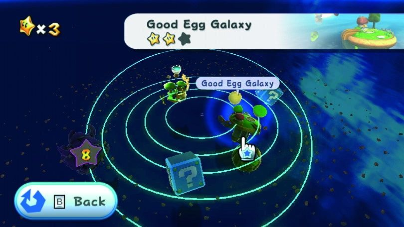

Rubrique scientifique
Dès que l’on évoque le thème de l’espace dans les jeux-vidéos, plusieurs titres nous viennent directement à l’esprit. Parmi tous ceux-là, un se démarque des autres : Super Mario Galaxy. Il fait partie des rares jeux auxquels tous les enfants ont joué, et en ont gardé un excellent souvenir.

Que ce soit pour son gameplay, son univers, son ambiance et surtout pour ses musiques légendaires, Super Mario Galaxy est l’un des jeux les plus populaires de Nintendo. Avec ses 12,8 millions d’exemplaires vendus, il est très difficile de ne jamais avoir entendu parler de ce jeu. Il s’agit d’un des premiers jeux Mario en trois dimensions, avec un très beau visuel pour l’époque. Son univers centré sur l’espace lui permet de se démarquer rapidement des autres jeux de la licence. Malgré la complexité de l’espace, ce jeu a réussi à lui donner une saveur particulière, surtout pour les enfants.
Dans le jeu, on retrouve de nombreux éléments spatiaux : comètes, planètes, étoiles, galaxies, et même des trous noirs ! Le fait que le réalisme ne soit pas une priorité dans le jeu pousse les enfants à l’émerveillement. De plus, cela permet aux game designers de créer des mécaniques de jeux ludiques, mais qui poussent tout de même le joueur à la réflexion sur des questions réelles. Par exemple, la mécanique de la gravité, bien qu’extrêmement simplifiée, peut permettre au joueur d’aller plus loin ou plus vite s’il l’utilise bien. Dans cet exemple, cela pousse le joueur à réfléchir au principe d’inertie et à d’autres principes physiques, alors que le public visé est assez jeune.
L’architecture spatiale est elle-aussi très simplifiée dans le jeu; elle reprend cependant les mêmes thèmes que dans la réalité. L’aventure se divise en plusieurs “galaxies” qui englobent plusieurs “planètes” ou groupes de planètes de différentes tailles. Même si cela ressemble plus à un système stellaire qu’à une galaxie, on peut noter l’effort des développeurs d’évoquer les bases de l’organisation de l’univers. Si quelques planètes sont rondes et réalistes, la plupart sont de forme quelconque et plutôt fantaisistes. Cela donne un aspect rêveur à cet espace, un aspect presque enfantin. Cet aspect est encore renforcé par la diversité des décors, et l’originalité de certains d’entre eux. On peut songer notamment à la planète Oeuf, ou bien au royaume des abeilles ainsi qu’à leurs ambiances et à leurs mécaniques particulières, qui ont fait rêver plus d’un joueur.
Malgré la volonté de changer la formule de la série afin de proposer une vision rafraîchissante de l’espace aux joueurs, il garde énormément des caractéristiques de la série, ce qui lui permet de garder un public jeune, et de pouvoir le familiariser avec cette thématique. En effet, le but du jeu est similaire aux précédents opus et assez simpliste : progresser de mondes en mondes en récupérant des étoiles afin de sauver Peach. Seule une nouvelle mécanique apparaît, la bulle de réapparition qui sera reprise dans quelques opus suivants, mais qui ne change quasiment rien pour les joueurs. Même les ennemis et les environnements sont pour la plupart inhérents à toute la série. Cela a pour effet de garder le joueur dans sa zone de confort tout en l’emmenant visiter un nouveau monde merveilleux : l’espace.
Ayant personnellement joué au jeu, j’en garde un très bon souvenir. En effet, le style de jeu associé aux graphismes uniques font qu’on s’attache facilement au jeu. De plus, la qualité de l’histoire nous immerge complètement dans ce jeu mythique. Avec du recul, on se rend compte que le jeu est très bien adapté aux plus jeunes; il évoque les différents aspects de l’espace, mais sans être trop compliqué, ce qui permet d’y passer des moments mémorables.
Pour résumer, Super Mario Galaxy est un jeu mythique de la WII, innovant de par son ambition de pouvoir donner aux plus jeunes le goût pour l’espace, de créer un tout nouvel univers et un tout nouveau style de jeu, tout en gardant “l’esprit mario”, la fantaisie et l’imagination. Les effets sonores, les musiques et les graphismes immergent complètement le joueur dans cet univers fantastique, et ont grandement participé à faire la renommée de cette légende, car c’est à cela que l’on pense en premier lorsqu’on nous parle du jeu. Son gameplay en 3D et la variété de mondes se rajoutent aussi au cocktail pour créer un jeu qui aujourd’hui, continue de faire rêver beaucoup d’entre nous.
Cet article a été rédigé par Baptiste Goudet et Mattéo Gosselin